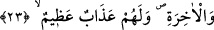
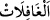

sorunca şöyle buyurdu: “Ümmetimden iki adam Allah Teâlâ’nın huzûrunda diz çökmüş
halde otururlar. Biri diğerini işâret ederek, ‘Yâ Rabbi, bundan benim hakkımı al.’ der.
Allah Teâlâ da ona kardeşinin hakkını ödemesini emreder. Adam: ‘Ya Rabbî
iyiliklerimden hiç bir şeyim kalmadı, ne vereyim?’ deyince diğeri, ‘Yâ Rabbi, o halde
günahlarımın bir kısmını yüklensin.’ der.”
Sonra Rasûlullah (s.a.)’in gözleri yaşla doldu ve şöyle buyurdu: “İşte o pek büyük bir
gündür. O gün insanlar günah ağırlıklarının üstlerinden alınmasına ihtiyaç
duyarlar.”
Sonra şöyle buyurdu: “Allah, o iki kişiden ilk konuşana: “Gözünü yukarı kaldır ve
cennetlere bak.” buyurur. O kişi: “Yâ Rabbi gümüşten yapılmış şehirler, altından
yapılıp incilerle süslenmiş saraylar görüyorum. Bunların hangi peygamberin, hangi
sıddîkın veya hangi şehidin?” diye sorar. Allah Teâlâ: “Ücretini verenlerin.” buyurur.
Adam: “Ya Rabbi bunların ücretini vermeye kim güç yetirebilir ki?” der. Allah Teâlâ:
“Sen buna güç yetirebilirsin.” buyurur. Adam: “Ya Rabbi, ne ile?” der. Allah Teâlâ:
“Kardeşini affetmekle.” buyurur. Bunun üzerine adam: “Kardeşimi affettim.” der. Allah
Teâlâ da: “Kardeşinin elinden tut ve onu cennete girdir.” buyurur.”[138]
Affını dileyen büyüklerin,
Affetmeyi bilmeli küçüklerin.
Affetmekte öyle bir lezzet vardır ki intikamda yoktur
3- Bu âyetle Allah Teâlâ şeyhleri ve büyükleri terbiye edip müridlerinden hatâ
yapanları ve ayağı sürçenleri terk etmemelerini ve Allah’ın ahlâkıyla ahlâklanmalarını
öğütlemiştir. Çünkü Allah bütün günahları affeder, onlara aldırmaz. Yine onlara,
müridlerine verdikleri şeyleri vermemezlik etmemelerini ve kendilerine bildirilen gayb
hükümlerini onlara haber vermelerini öğretmiştir. Çünkü istidâdı olan kimse, bir kısım
beşerî mânilerle ebedî olarak tarîkat ahkâmından mahrûm kalmaz. Her hâle karşı
yardımcı olan Allah’tır, yapılan kötülükleri affetmek de O’nun elindedir.
23. Namuslu, kötülüklerden habersiz mümin kadınlara zinâ isnâdında bulunanlar,
dünya ve âhirette lânetlenmişlerdir.
“Namuslu,” kendilerine isnad edilen zinâ ve çirkin işlerden uzak olan iffetli
“kötülüklerden habersiz” zinâ ve onun öncüllerinden hatırlarına hiçbir şey gelmeyecek
kadar böyle şeylerden haberi olmayan “mümin kadınlara zinâ isnâdında bulunanlar,”
“
” kelimesinde, “
” kelimesinin ifâde edemediği nezâhet ve temizliği